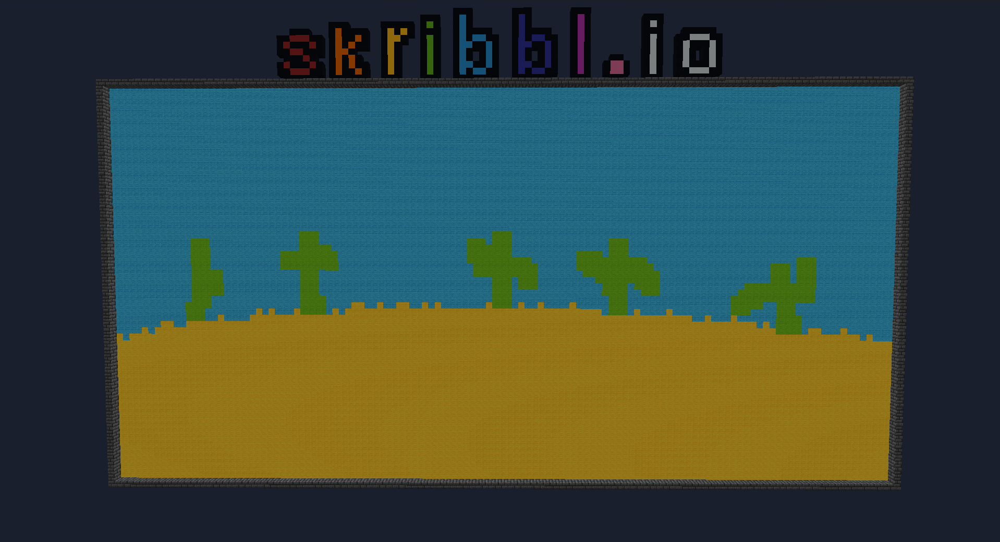

I recreated the popular drawing game skribbl.io inside Minecraft Bedrock, combining custom
items, blocks, and Script API to make it work seamlessly.
Players take turns drawing and guessing words, just like the original, but in a Minecraft world. It’s a fun
way to show off my scripting and UI design skills while keeping gameplay smooth and multiplayer-friendly.
Whether you're guessing or drawing, it’s a creative and social experience.